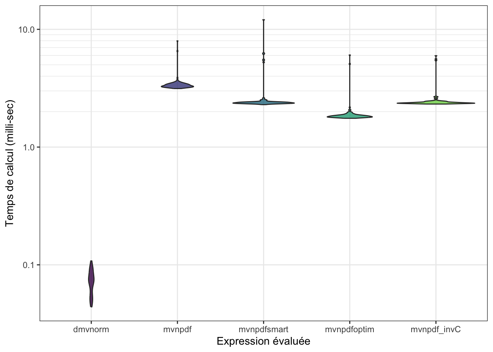
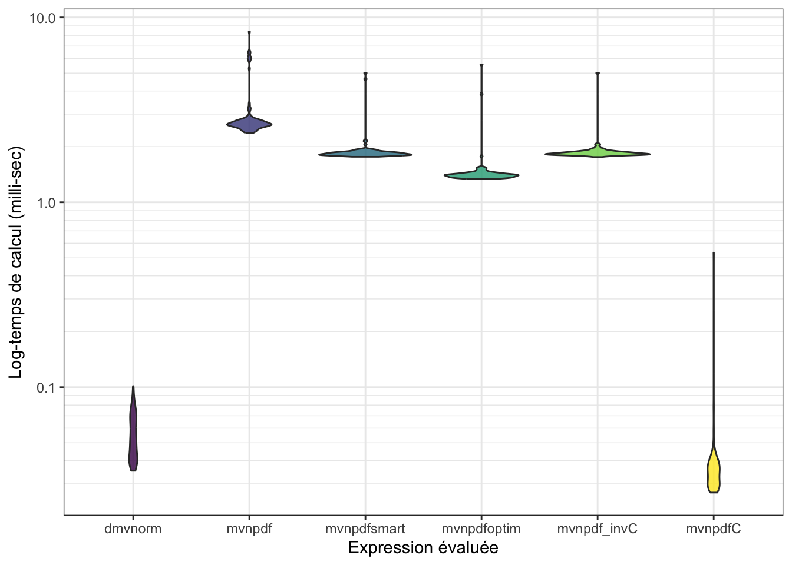

Chapitre 5 Rcpp ou comment intégrer facilement du code C++dans un package R
Rcpp (R-C-Plus-Plus) est un package qui facilite l’interface entre C++ et R. R est un langage
interprété, ce qui facilite un certain nombre de choses (notamment nous donne accès à la console
dans laquelle on peut évaluer du code à la volée). Néanmoins, cette facilité d’utilisation se
compense entre autre par des temps de calcul supérieurs à ceux de langages de plus bas niveau,
tels que C, Fortran et C++ (mais qui nécessitent eux une compilation).
On dirigera le lecteur curieux vers le livre en ligne Rcpp for everyone de Masaki E. Tsuda, qui constitue une ressource très complète pour comprendre l’utilisation de Rcpp en plus de l’introduction que l’on peut trouver dans le livre Advanced R d’Hadley Wickham.
5.1 Première fonction en Rcpp
A vous de jouer !
- Afin de rendre votre package prêt pour l’utilisation avec Rcpp, commencez par executer la commande suivante :
devtools::use_rcpp()
Constatez les changements apportés
il faut également ajouter les 2 commentaires roxygen suivants dans la page d’aide du package dans son ensemble :
#' @useDynLib mypkgr
#' @importFrom Rcpp sourceCpp, .registration = TRUE
NULLNous allons maintenant créer une première fonction en Rcpp permettant d’inverser une matrice.
Pour cela, nous allons nous appuyer sur la library C++ Armadillo.
Il s’agit d’une library d’algèbre linéaire moderne et simple, hautement optimisée, et interfacée
avec R via le package RcppArmadillo.
C++ n’est pas un langage très différent de R. Les principales différences qui nous concernent :
C++est très efficaces pour le boucles for (y compris les boucles for emboîtées). Attention : il y a souvent un sens qui est plus rapide que l’autre (ceci est dû à la manière dont C++ attribue et parcours la mémoire).Chaque commande doit se terminer par un point virgule ‘;’
C++est un langage typé : il faut déclarer le type de chaque variable avant de pouvoir l’utiliser.
A vous de jouer !
Créez un nouveau fichier
C++depuis RStudio (via le menuFile>New File>C++ File), et enregistrez le dans le dossiersrc. Prenez le temps de le lire et essayez de comprendre chaque ligne.Compilez et chargez votre package (via le bouton “Install and Restart”) et essayez d’utiliser la fonction
timesTwo()depuis la console.Installez le package RcppArmadillo, et n’oubliez pas de faire les ajouts nécessaires dans
DESCRIPTION(cf.usethis::use_rcpp_armadillo())À l’aide de l’[introduction à
Rcpp]](http://adv-r.had.co.nz/Rcpp.html#rcpp-intro) de Hadley Wickham dans son livre Advanced R, ainsi que de la documentation du packageRcppArmadillode celle de la libraryC++Armadillo, tentez d’écrire une courte fonctioninvCenC++calculant l’inverse d’une matrice.Lorsque vous avez réussi à compiler votre fonction
invCet qu’elle est accessible depuis créer une fonctionmvnpdf_invC()à partir de l’implémentation demvnpdfsmarten remplaçant uniquement les calculs d’inverse matriciel par un appel àinvC.Evaluer le gain en performance de cette nouvelle implémentation
mvnpdf_invC.
n <- 1000
mb <- microbenchmark(mvtnorm::dmvnorm(matrix(1.96, nrow = n, ncol = 2)),
mvnpdf(x=matrix(1.96, nrow = 2, ncol = n), Log=FALSE),
mvnpdfsmart(x=matrix(1.96, nrow = 2, ncol = n), Log=FALSE),
mvnpdfoptim(x=matrix(1.96, nrow = 2, ncol = n), Log=FALSE),
mvnpdf_invC(x=matrix(1.96, nrow = 2, ncol = n), Log=FALSE),
times=100L)
mb## Unit: microseconds
## expr min
## mvtnorm::dmvnorm(matrix(1.96, nrow = n, ncol = 2)) 68.517
## mvnpdf(x = matrix(1.96, nrow = 2, ncol = n), Log = FALSE) 4419.739
## mvnpdfsmart(x = matrix(1.96, nrow = 2, ncol = n), Log = FALSE) 3209.040
## mvnpdfoptim(x = matrix(1.96, nrow = 2, ncol = n), Log = FALSE) 2382.014
## mvnpdf_invC(x = matrix(1.96, nrow = 2, ncol = n), Log = FALSE) 3162.984
## lq mean median uq max neval cld
## 91.5645 115.5275 106.4035 129.3455 302.295 100 a
## 4995.7835 6147.9918 5262.2960 6192.1585 40398.531 100 d
## 3736.1860 4166.4915 3830.9750 3993.4030 11950.145 100 c
## 2775.2390 3297.4240 2893.3840 3120.9850 13061.894 100 b
## 3694.0100 4009.3123 3806.1785 4003.8185 12579.719 100 bc## Warning: It is deprecated to specify `guide = FALSE` to remove a guide. Please
## use `guide = "none"` instead.
profvis::profvis(mvnpdfoptim(x=matrix(1.96,
nrow = 2, ncol = 1000), Log=FALSE))
profvis::profvis(mvnpdfoptim(x=matrix(1.96,
nrow = 100, ncol = 1000), Log=FALSE))5.2 Optimisation grâce à C++
En règle générale, on ne gagne pas beaucoup en temps de calcul en remplaçant une fonction R
optimisée par une fonction en C++. En effet, la plupart des fonctions de base de R s’appuie en
réalité déjà sur des routines C ou Fortran bien optimisée. Le gain se limite alors simplement
à la suppression des vérifications des arguments et de la gestion des différents types.
A vous de jouer !
À partir de
mvnpdfsmart, proposez une implémentation completement enC++du calcul de densité de la loi Normale multivariéemvnpdfC().Evaluer le gain en performance de cette nouvelle implémentation
mvnpdfC
Vous pouvez télécharger notre proposition de mvnpdfC.cpp ici.
n <- 1000
mb <- microbenchmark(mvtnorm::dmvnorm(matrix(1.96, nrow = n, ncol = 2)),
mvnpdf(x=matrix(1.96, nrow = 2, ncol = n), Log=FALSE),
mvnpdfsmart(x=matrix(1.96, nrow = 2, ncol = n), Log=FALSE),
mvnpdfoptim(x=matrix(1.96, nrow = 2, ncol = n), Log=FALSE),
mvnpdf_invC(x=matrix(1.96, nrow = 2, ncol = n), Log=FALSE),
mvnpdfC(x=matrix(1.96, nrow = 2, ncol = n), mean = rep(0, 2), varcovM = diag(2), Log=FALSE),
times=100L)
mb## Unit: microseconds
## expr
## mvtnorm::dmvnorm(matrix(1.96, nrow = n, ncol = 2))
## mvnpdf(x = matrix(1.96, nrow = 2, ncol = n), Log = FALSE)
## mvnpdfsmart(x = matrix(1.96, nrow = 2, ncol = n), Log = FALSE)
## mvnpdfoptim(x = matrix(1.96, nrow = 2, ncol = n), Log = FALSE)
## mvnpdf_invC(x = matrix(1.96, nrow = 2, ncol = n), Log = FALSE)
## mvnpdfC(x = matrix(1.96, nrow = 2, ncol = n), mean = rep(0, 2), varcovM = diag(2), Log = FALSE)
## min lq mean median uq max neval cld
## 65.200 87.6125 118.42410 114.3435 132.1080 276.825 100 a
## 4256.344 5022.3770 5488.65172 5252.2720 5485.4330 17245.800 100 d
## 3065.346 3679.3920 3972.78843 3790.4555 3915.7080 10156.814 100 c
## 2377.090 2820.8755 3073.45270 2899.1050 3015.1125 12680.455 100 b
## 3027.314 3688.1245 4042.17264 3816.0435 3917.9465 11640.784 100 c
## 50.400 67.3050 86.96821 73.1935 80.2895 1228.500 100 a## Warning: It is deprecated to specify `guide = FALSE` to remove a guide. Please
## use `guide = "none"` instead.
À noter que vous pouvez utiliser des fonctions Rcpp en dehors de l’architecture
d’un package grâce à la fonction Rcpp::sourceCpp(). Mais comme nous avons
qu’il est préférable de gérer tous ces code sous la forme de package, il est
peu probable que vous en ayez besoin !
5.3 Annexe 5.1 : l’optimisation prématurée n’est pas une bonne idée
Chambers, Software for Data Analysis: Programming with R, Springer, 2008 :
Including additional C code is a serious step, with some added dangers and often a substantial amount of programming and debugging required. You should have a good reason.